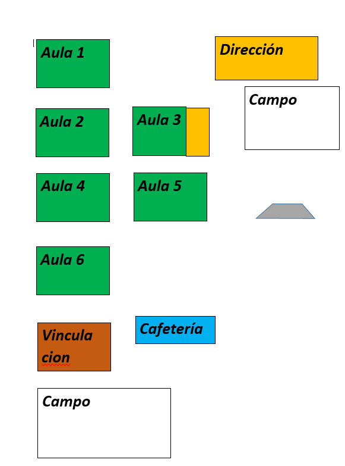

CBT (infrestructura y recursos)
La institucion cuenta con 6 EDIFICIOS de estudio,
ademas de direccion,
Orientaci�n (extencion de la direccion),
una cafeteria, dos campos, sitio de bicicletas,
estacionamiento para maestros, ba�os para
alumnado y maestros entre otras cosas.

Volver al inicio.